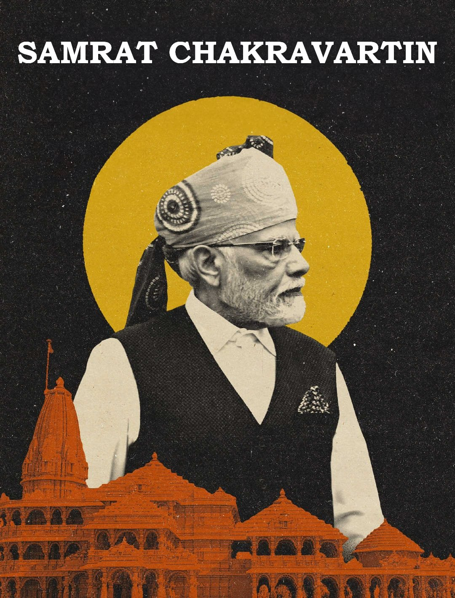

"I Have Always Believed In Evolving A Consensus Before Taking Any Major Decision"
Biography
- Narendra Damodardas Modi ( born 17 September 1950 ) is an Indian politician who has served as the 14th prime minister of India since May 2014.
- Modi was the chief minister of Gujarat from 2001 to 2014 and is the Member of Parliament (MP) for Varanasi. He is a member of the Bharatiya Janata Party (BJP) and of the Rashtriya Swayamsevak Sangh (RSS).
- He is the longest-serving prime minister from outside the Indian National Congress.
- After completing his education in Political Science from the University of Delhi and Gujarat University, Modi entered politics in the 1970s, joining the Rashtriya Swayamsevak Sangh (RSS). He subsequently became associated with the Bharatiya Janata Party (BJP), the political arm of the RSS.
- Modi's political career gained momentum when he was appointed Chief Minister of Gujarat in 2001, a position he held until 2014. During his tenure, Gujarat witnessed significant economic growth and development.
- In 2014, Narendra Modi led the BJP to a historic victory in the Indian general elections and became the 14th Prime Minister of India. His tenure has been characterized by ambitious economic reforms such as the implementation of Goods and Services Tax (GST) and demonetization, as well as initiatives like "Make in India," "Digital India," and "Swachh Bharat Abhiyan" (Clean India Mission).
- Modi secured a second term in office after winning the 2019 general elections with a resounding majority. Throughout his leadership, Modi has been praised for his decisive and charismatic style, focusing on nationalism, economic development, and cultural conservatism.
- Despite polarizing opinions, Narendra Modi's journey from a tea-seller's son to the Prime Minister of India remains a testament to his political acumen, determination, and the evolving dynamics of Indian politics.
For more info, check out Narendra Modi on Wikipeadia [Developed by- @Shivshankar Ganesh]